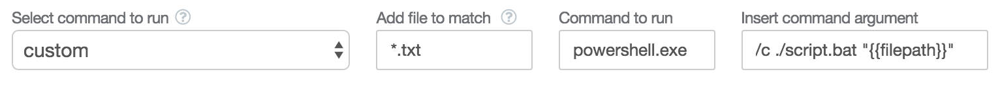

Running custom commands and batch files in Rinobot
Its easy to run any command line task from within Rinobot. Just choose custom
from the dropdown list of commands.
Example: (Linux/Mac) run command line program
Say we are running a long running simulation, and at the end of the simulation we want to call
a compiled program called process-data and feed it the files created by the simulation:
process-data ./simulation/output.txtWe just insert a command like in the image below
Example: (Windows) run batch file program
Say we have a simple batch file called script.bat, containing the following code, which prints the arguments passed to it
echo %1So on windows if we typed the following into the console
>>> ./script.bat /path/to/file.txtIt would emit
>>> /path/to/file.txtso we can easy pass files to batch files by using the following command

We need to pass the powershell and /c arguments because Rinobot spawns a new instance of powershell to run the file.
With this you can schedule a whole bunch of windows commands to operate on data as it appears.